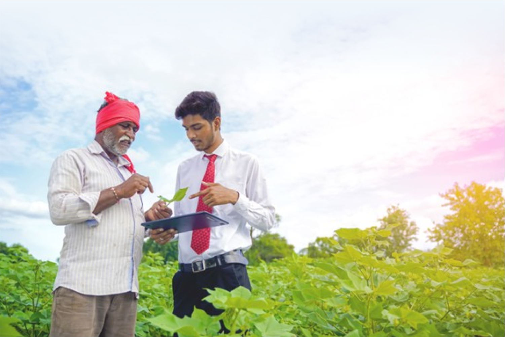
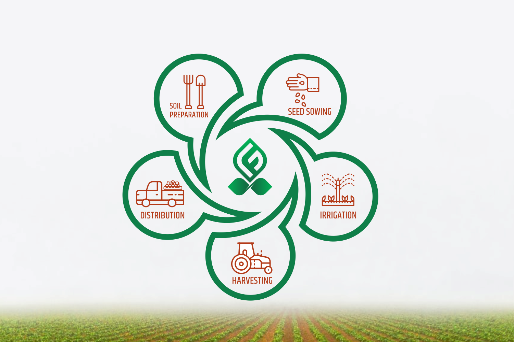
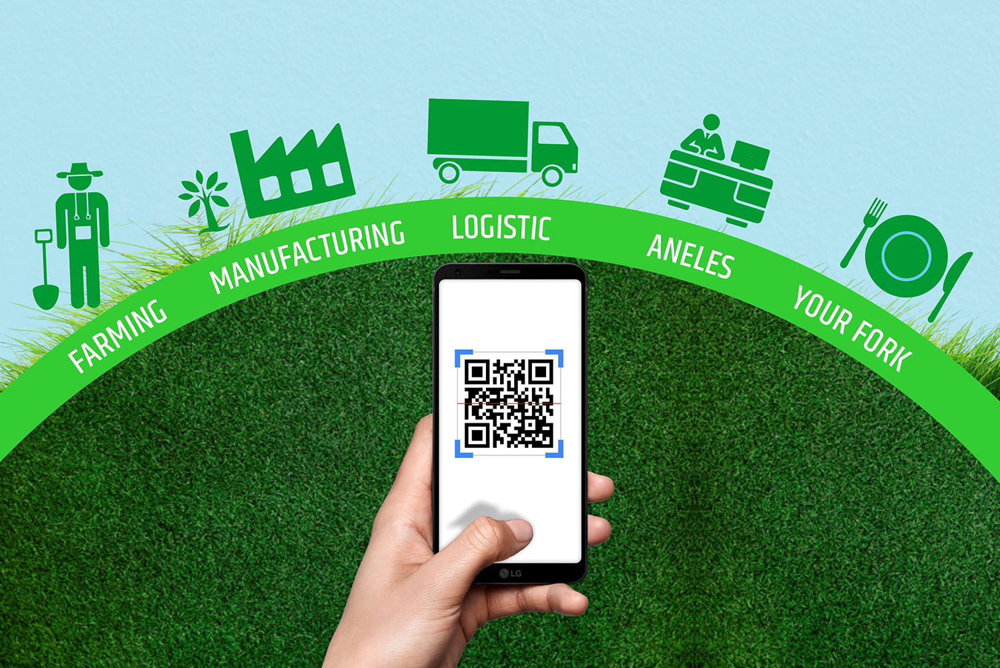

Building an ecosystem that benefits farmers and consumers
Agriculture is one of the major contributors to the growth of the Indian economy. However, over the years we have seen the struggles of farmers and how there are gaps in the supply that result in quality issues for end consumers. A holistic farming ecosystem is one of the effective ways to address the concerns and bring quality products to the market.
The much-needed support for farmers
There is a minimum income that the farmers need to earn to sustain their livelihood with their agricultural produce. When poverty strikes, many of the farmers leave farming practices to migrate to cities for minimum wage jobs. The right support is needed to turnaround this situation for farmers so that they stay back with a sustainable income in their hometown. Farmer Producer Organisations (FPOs) like Goda Farm are transforming the lives of farmers by supporting them. The FPO connects with corporate companies to understands their requirements in terms of quantity and quality. By selling products through the FPO, the farmers can plan the crop production as per the requirement and get a fair price for their produce. The NGOs of FPOs also plan and implement initiatives to further support the families of farmers.
How consumers benefit from the ecosystem?
When consumers purchase products from the market, they look for quality seals or may check the source of the produce. Sometimes, there are intermediaries who use illegal techniques to sell the products. To prevent such instances, sourcing products from the FPO directly is a good approach. FPOs can estimate the market requirements and co-ordinate directly with sellers to ensure the consumer receives the expected quality.
To explore partnerships with Goda Farm, write to info@godafarm.com
Focus areas in the food traceability system to ensure the quality of farm produce
Each day, we try to focus on eating healthy to build our immunity with nutritious food. Farm products such as food grains, fruits and vegetables form a key part of a good diet plan. However, consumers often may have questions on whether they are receiving fresh produce or not. Farmer Producer Organisations (FPOs) in India like Goda Farm work with farmers and sellers to maintain quality across the food traceability system to deliver quality agricultural produce. Below are key areas where quality is maintained through strict guidelines by FPOs in the food traceability system:
Farming Methods:
Who are the farmers growing the crops? What are the methods that use to grow and harvest the crop? The FPOs maintain a proper record of the market requirement and assign farmers to meet those requirements on time. The network of farmers receives guidance on sustainable farming practices through support centres too. Events are conducted in collaboration with educational institutions to update farmers with research insights and to help them with solutions to farming-related challenges. By giving farmers a platform for knowledge exchange and other support, the quality standards of the farm produce are ensured by FPOs.
Infrastructure for storage:
If there is a future requirement to be met and excess produce need to be stored, there should be infrastructure available for farmers. FPOs provide the required storage space to farmers for ensuring minimum wastage of harvested farm products.
Packaging and labelling best practices:
Once the farmers provide the harvested crops to FPOs, these crops are handled as per the labelling and packaging guidelines put forth by regulatory authorities. The primary and secondary packaging depends on the transportation and properties of the produce. The exact details of the source with storage guidelines and consumption guidelines should be mentioned on the label of the packaged product.
If the produce gets spoilt while in transit, the appropriate recall procedures are to be followed. To ensure that miscreants don’t sell the spoilt products in the market, steps should be taken to dispose the recalled products in an environment-friendly manner. Further, a systematically-managed supply chain will have action steps for addressing the supply gap due to the recalled products. FPOs are aware of the challenges and have a tracking system in place to ensure the set protocols are followed.
To explore partnerships with Goda Farm, write to info@godafarm.com
Improved food traceability with farmer producer organizations
Food traceability is a focus area for food industry stakeholders across the world. India is considered among the major producers of fruits and vegetables across the world. Managing the various areas across the supply chain becomes essential to ensure the end consumers receive a product that is safe to consume.
The food-related diseases that are caused due to inappropriate practices for improving the product features or to prolong the life of the product are a matter of concern for food producers. In India, the infrastructure and food traceability system pose challenges largely due to the unstructured nature of the sector.
Farmer Producer Organisations (FPOs) are revolutionising the food traceability system by streamlining the processes. With guidance and infrastructure support available to farmers, the crop production can be planned and the quality expectations can be met. The ‘Farm To Plate’ trend with monitored processes prevents possible contamination of food items with planned storage and packaging solutions.
Foodborne diseases due to bad quality of food can tarnish a brand image and trigger health risk concerns from authorities. The stakeholders in the food traceability systems such as farmers, processors, sellers, etc. who demonstrate transparency in food management are likely to resolve quality challenges on time.
To explore partnerships with Goda Farm, write to info@godafarm.com